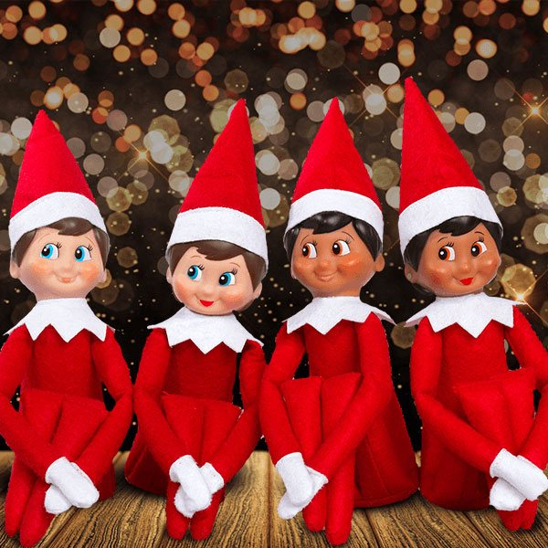

Tomtenissar är en av de mest älskade symbolerna för julen. Traditionen har sina rötter i nordisk folklore, där nissarna sågs som små, hjälpsamma väsen som tog hand om gårdar och djur. Under juletid förknippades de med att hjälpa jultomten att förbereda gåvor och sprida julglädje. I dag är tomtenissarna ofta avbildade med röda mössor, glada leenden och flitigt arbete i tomtens verkstad.